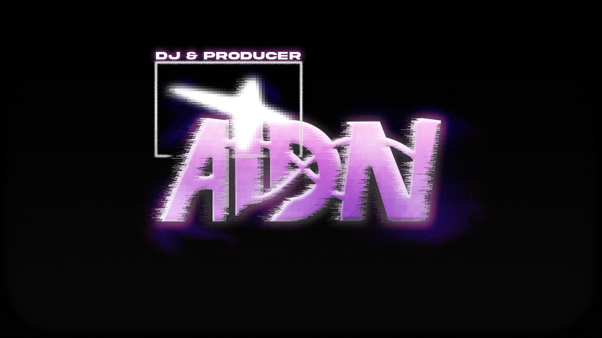
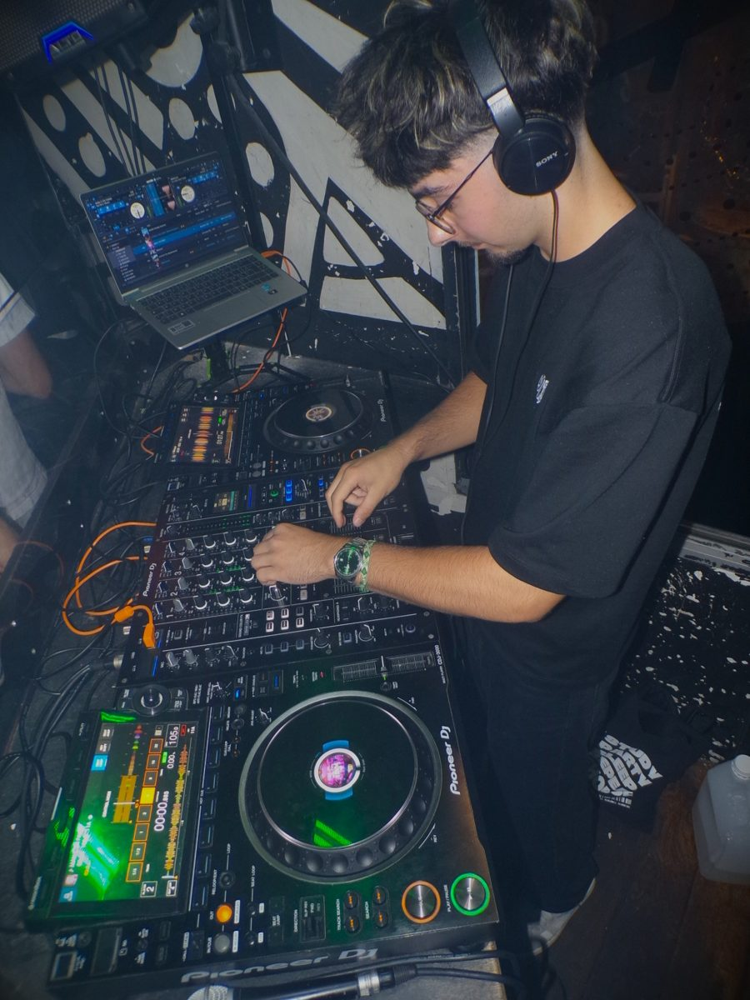

Presskit 2026 - Nantes / Vendée

Rap, afro, shatta, open format. Un set qui lit la salle et ne lâche rien jusqu'au dernier titre.
01 - Qui je suis
Bio

AIDN est un DJ originaire de Vendée, qui construit son univers autour d'une idée simple : chaque set est une performance, du premier titre jusqu'au dernier.
À 19 ans, autodidacte et passionné par la musique, il travaille son identité sonore et son sens du dancefloor à travers des mixes réguliers publiés sur Instagram et TikTok, pour ensuite porter cette énergie sur scène, avec pour ambition d'en occuper davantage.
Baignant dans la musique depuis toujours, il pratique la batterie, le piano, la guitare et la production / composition musicale. Il transpose cette passion dans chaque performance, créant une atmosphère unique, portée par son expérience théâtrale.
02 - Pour les pros
Booking
Disponible pour des dates en Vendée, à Nantes & alentours, en semaine comme le week-end. Contact 7j/7.
Rider technique
Pour un set optimal, prévoir
- 1 table de mixage Pioneer DJM S7 ou équivalent
- 2 platines Pioneer CDJ 2000 (ou autres Pioneer)
- OU un contrôleur DJ Pioneer si pas de platines
- Si possible, un retour DJ booth
- 1 microphone
Matériel personnel
- PC portable
- Casque
- Stand support ordinateur
- Logiciel : Serato DJ Pro
Possibilité de s'adapter aux besoins spécifiques de chaque événement.
03 - Agenda
Dates
Dates à venir...
04 - Images
Galerie
Le mur AIDN : portraits, live & sets, backstage.
05 - Réserver une date